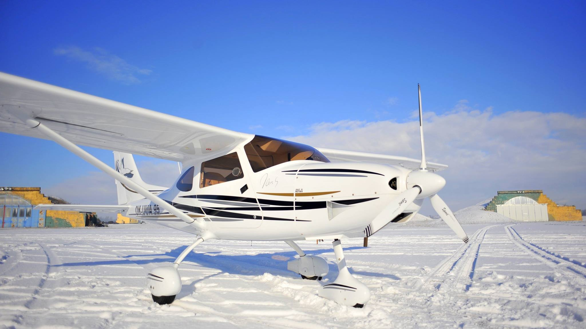
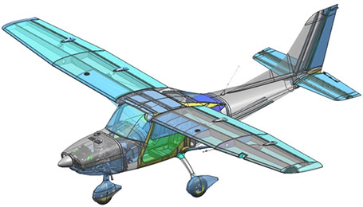
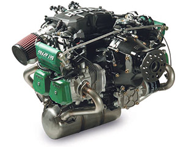

TL Sirius


Large windows of the cabin will turn each of your flights into an unforgettable experience. Easy maneuverability of the aircraft and comfort for both the pilot and the crew will leave you in no doubt. Sirius will become your best match.
Features:
Two side-by-side seats, rectangular wing with trapezoid-shaped outer part,landing gear is standard with steerable nose wheel and main wheels with brakes. Large flaps are electronically operated and can be pulled out to position 15 ° for take-off and 45 ° for landing.

Sirius specifications
Length ...... 6.97 m
Height ..... 2.30 m
Wing span .... 9.4 m
Wing area ... 11.26 m2
Horizontal tail width 2 m
Horizontal tail area 2.68 m2
Vertical tail area 1.45 m2
Cabin width ..... 1.13 m
Never exceed speed 136 knots
Cruising speed 97 - 118 knots
Minimum speed 32 knots
Climb rate @ max TOW 985 fpm
Empty weight - depends on options 297 kg
Maxium take-off weight 600 kg
Minimum crew weight 60 kg
Maximum crew weight 180 kg
Maximum luggage weight 25 kg
Fuel consumption @ 75% power 16.2 l/h
Fuel tank capacity 120 l
Flying range 2000 km
Length ...... 6.97 m
Height ..... 2.30 m
Wing span .... 9.4 m
Wing area ... 11.26 m2
Horizontal tail width 2 m
Horizontal tail area 2.68 m2
Vertical tail area 1.45 m2
Cabin width ..... 1.13 m
Never exceed speed 136 knots
Cruising speed 97 - 118 knots
Minimum speed 32 knots
Climb rate @ max TOW 985 fpm
Empty weight - depends on options 297 kg
Maxium take-off weight 600 kg
Minimum crew weight 60 kg
Maximum crew weight 180 kg
Maximum luggage weight 25 kg
Fuel consumption @ 75% power 16.2 l/h
Fuel tank capacity 120 l
Flying range 2000 km

Engine options are
Rotax 912 ULS
Rotax 912 IS Sport
Rotax 914
Rotax 912 ULS
Rotax 912 IS Sport
Rotax 914